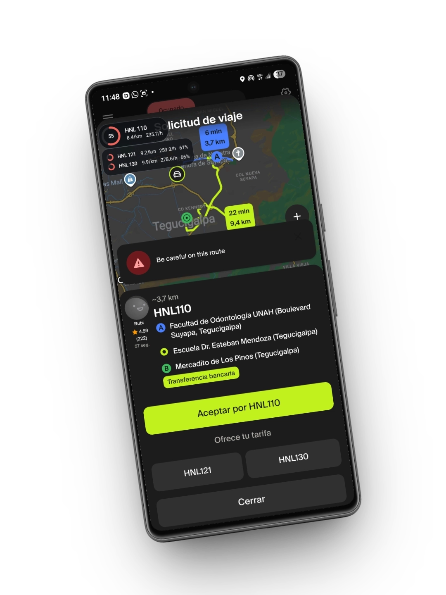
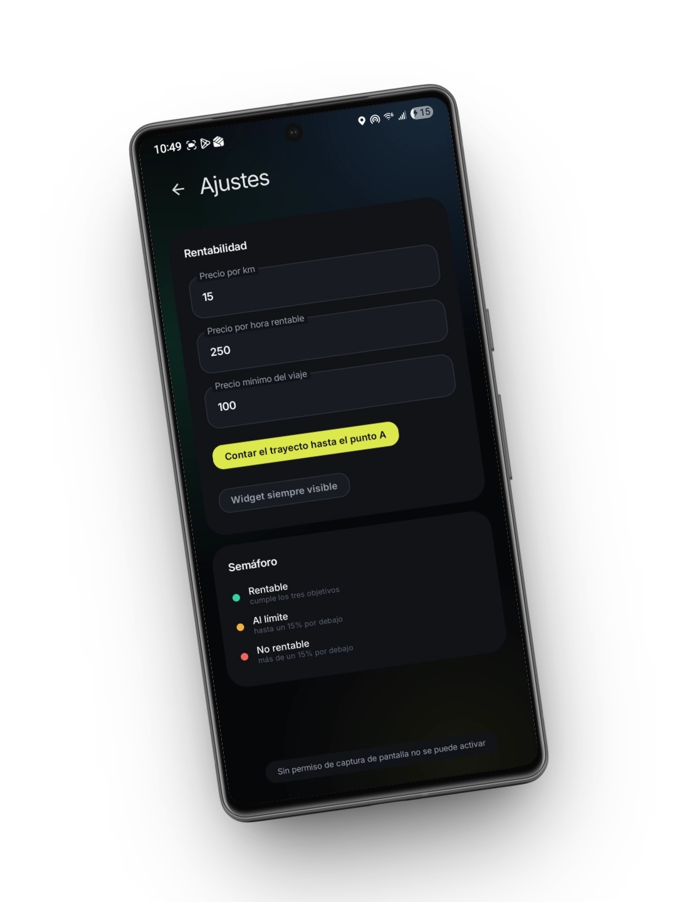
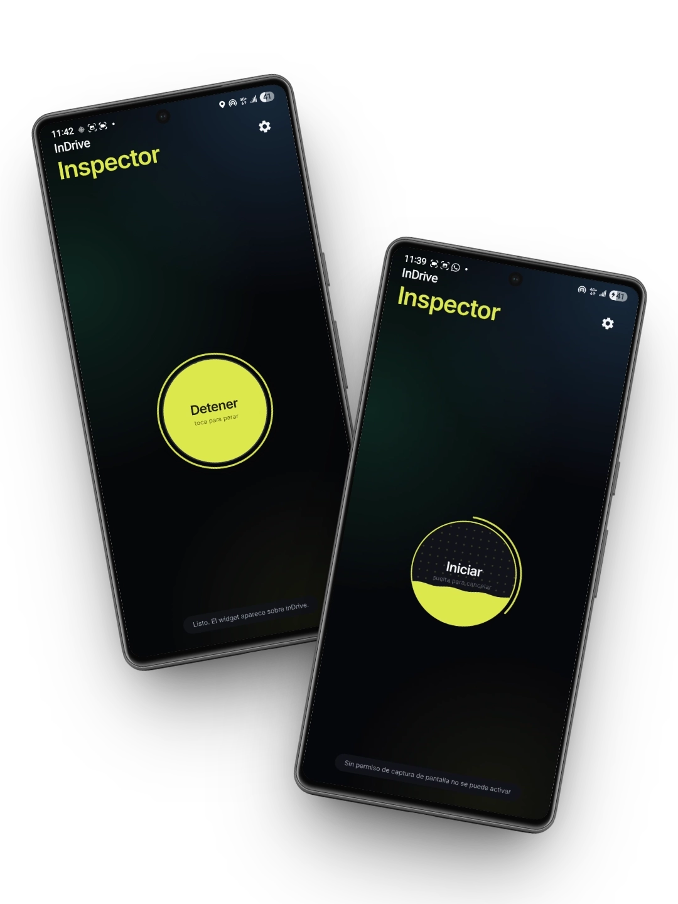
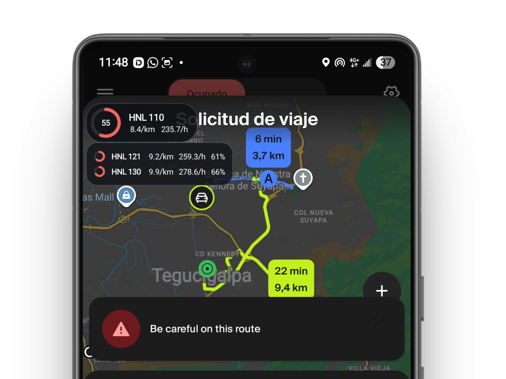

Calcula la rentabilidad real de cada carrera de InDrive antes de aceptarla. El widget flotante te muestra si ganas o pierdes dinero en cuestión de milisegundos.

InDrive Inspector te da los datos que necesitas en milisegundos para que no dudes a la hora de ofertar o aceptar un viaje.
Establece tu precio ideal por kilómetro, valor de tu hora y tarifa mínima. La app se adapta a tus metas financieras diarias.
No pierdas tiempo leyendo números. Un indicador visual (Verde, Amarillo, Rojo) te dirá instantáneamente la calidad del viaje.
Aparece mágicamente sobre la app de InDrive justo cuando entra una solicitud y se esconde cuando no lo necesitas. Cero molestias.

Entra a la sección de Ajustes y configura tus parámetros de rentabilidad. Ingresa cuánto deseas ganar por kilómetro, el valor de tu hora y el precio mínimo por el cual estás dispuesto a encender el motor.
Con una interfaz súper minimalista, solo necesitas mantener presionado el botón central para iniciar el inspector. El widget quedará a la espera, invisible, hasta que abras InDrive.


Al recibir una solicitud de viaje, el Inspector analiza la distancia, el tiempo y la tarifa ofrecida. Te muestra un desglose con las tarifas alternativas y si cumplen con tus metas usando un código de colores.
Deja de adivinar y empieza a facturar con inteligencia. Descarga InDrive Inspector y dile adiós a los viajes baratos.
*Requiere permisos de superposición de pantalla y grabar la pantalla para funcionar.